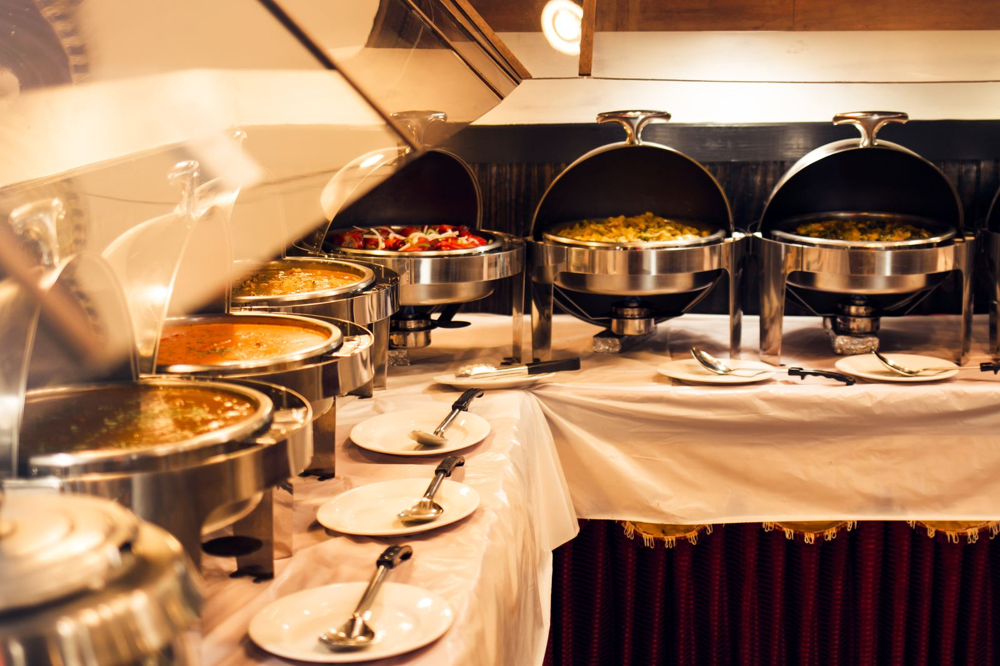
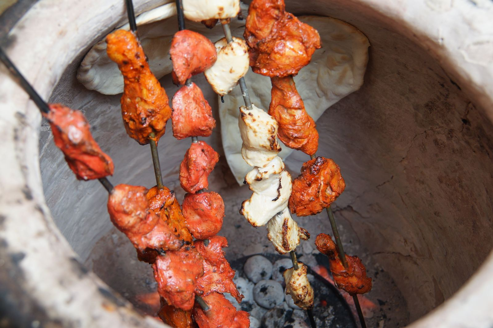

Lunch is served.
A generous spread of Indian favorites, warm from the kitchen in Rock Hill.
Pickup available — order ahead and skip the wait.
Made to order. Never pre-made.
Every dish at Tandoor is cooked fresh when you order it — nothing ready, nothing reheated. That's why your food arrives hot and full of flavor... and why the wait can run a little longer than other Indian restaurants. Worth it.

Our Famous Lunch Buffet
Discover a changing spread of comforting curries, fragrant rice, tandoori favorites and more.
Call for today’s spread.
+1 (803) 659-3434
Fire, spice and a proper char.
Yogurt-marinated meats and paneer meet the heat of the tandoor for deep flavor and crisp edges.
Rock Hill keeps coming back.
“The food was amazing, honestly the best Indian food I’ve ever eaten. We tried a number of different dishes and every one of them was delicious. Highly recommend the mango curry.”Chris Sesock · Google review
“The food is delicious and the staff is friendly and very helpful.”Mandy S. · Google review
“Everything was outstanding. I will be back”Andrew Lombardo · Google review
“Great place, great food!”Alyssa DiVeronica · Google review
Come hungry.
Rock Hill, SC 29732 Call us +1 (803) 659-3434
& 4:30–9:00 PM · Closed Monday
Indian food near you in York County.
From our kitchen on Anderson Road, we serve Indian restaurant favorites across the Rock Hill area.
Rock Hill
Our home — dine in on N Anderson Rd or call ahead for pickup.
Fort Mill
A short drive up 77 for the lunch buffet and dinner curries.
Tega Cay
Indian catering and family dinners, minutes from the lake.
Lake Wylie
Weeknight takeout and weekend catering across the river.
Indian Land
Just south of Ballantyne — lunch buffet runs and family takeout nights.
Pineville
Up I-77 for date-night curries and weekend catering spreads.
South Charlotte
Ballantyne and beyond — worth the drive for the famous lunch buffet.
York
West on Highway 5 — takeout and catering for York families.
Clover
A quick hop over the lake for dinner curries and party catering.
Gastonia
North up 321 — tandoori nights and group catering made easy.
Questions, answered.
What is the best Indian restaurant in Rock Hill, SC?
Tandoor Indian Cuisine on N Anderson Rd is known for its famous lunch buffet, tandoori specialties, and curries. Call (803) 659-3434.
Does Tandoor have a lunch buffet?
Yes — our famous lunch buffet runs Tuesday through Sunday, 11:30 AM to 2:30 PM, with a changing spread of curries, rice, and tandoori favorites.
Do you offer Indian catering near me?
Yes. We cater weddings, birthday parties, and corporate events across Rock Hill, Fort Mill, Tega Cay, Lake Wylie, Indian Land, Pineville, York, Clover, Gastonia, and the Charlotte area. See our catering page or call for a quote.
Are you open on Mondays?
No — we're closed on Mondays, and open Tuesday through Sunday, 11:30 AM–2:30 PM and 4:30 PM–9:00 PM.
Is everything made fresh at Tandoor?
Yes. Every dish is prepared to order — nothing pre-made, nothing reheated. That's also why our wait can run a little longer than other Indian restaurants. Fresh is worth the wait.